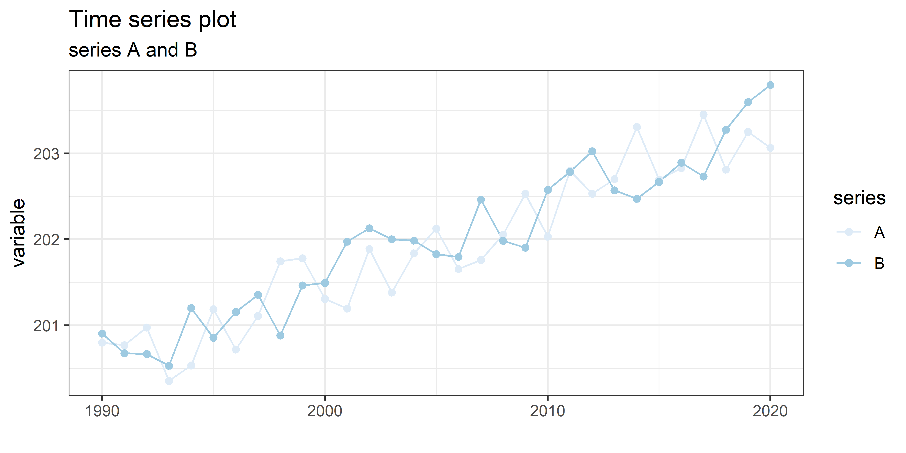
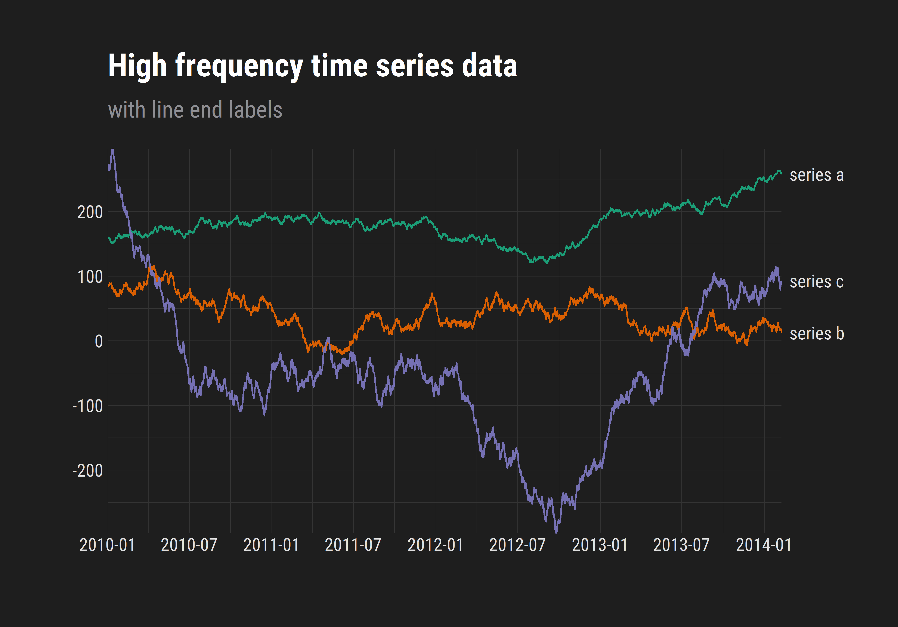

3 Line plots
3.1 connected dot time series
# generate random time series of series 1 and series 2
time_series <-
bind_rows(
tibble(year = seq(1990, 2020, 1)) %>%
mutate(series = "A",
variable = (year/10) + runif(31,1,2)),
tibble(year = seq(1990, 2020, 1)) %>%
mutate(series = "B",
variable = (year/10) + runif(31,1,2))
)
# time series plot
# ggplot is the first command for any ggplot2 plot. data and aestetics aes()
# can be defined here or in any individual geom_*(function)
# "color" controls the color of lines, "fill" controls color of fill.
# by assigning color to a variable in the aes() function we get a different
# line for each series
ggplot(data = time_series, aes(x = year, y = variable, color = series)) +
# geom line takes an x and y variable (defined above) and plots a line
geom_line() +
# ploting the points on the line show where the real data points are
geom_point() +
# there are many ways to color plots. If colors are defined meaningfully
# as either a way to distinguish between different vars or to show value
# colors must be modified using a scale_color/fill_* command.
# scale_color_brewer allows you to use built in color palettes
scale_color_brewer(type = "qual", palette = "Blues") +
# themes change the overall look of the plot. these can also be modified
# further if need be (also can use packaged themes like theme_economist)
theme_bw() +
# dont need a label for year because it is self evident
xlab("")+
# title the plot, can also have a subtitle
ggtitle(label = "Time series plot",
subtitle = "series A and B")

Figure 3.1: Example of a line plot of random time series data
3.2 High freqeuncy time series
# function to generate high-frequency time-series data
drunkards_walk <- function(x, y, za, zb) {
# basic markov chain that creates a vector starting at x, of length y,
# and with a maximum of -za + zb variation from one number to next,
# za and zb control the overall slope
values <- x
for (n in 1:(y - 1)) {
x <- x + runif(1, za, zb)
values <- rbind(values, x)
}
out <- values %>% as.vector()
}
# generate a set of time series data over 1500 days
time_series <-
tibble(date = seq.Date(from = as.Date("1/1/2010", "%m/%d/%Y"),
by = "day",
length.out = 1500),
series_a = drunkards_walk(runif(1,50,300), 1500, -3, 3.3),
series_b = drunkards_walk(runif(1,50,300), 1500, -6, 5.8),
series_c = drunkards_walk(runif(1,50,300), 1500, -10, 9.8)) %>%
pivot_longer(c("series_a", "series_b", "series_c"),
names_to = "series",
values_to = "variable") %>%
mutate(series = str_replace(series, "_", " "))
# filter just the end values to key line labels onto
time_series_end <- time_series %>%
filter(date == max(date))
# plot
ggplot(data = time_series, aes(x = date, y = variable, color = series)) +
# geom line takes an x and y variable (defined above) and plots a line
geom_line() +
# there are many ways to color plots. If colors are defined meaningfully
# as either a way to distinguish between different vars or to show value
# colors must be modified using a scale_color/fill_* command.
# scale_color_brewer allows you to use built in color palettes
scale_color_brewer(type = "qual", palette = "Dark2") +
# By default R leaves space between the axis and the data visualization.
# by setting scale_y_continuous() expand to zero, we can eliminate this.
scale_y_continuous(name = "",
expand = c(0, 0),
breaks = pretty_breaks(5),
sec.axis = dup_axis(
breaks = time_series_end$variable,
labels = c("series a",
"series b",
"series c"),
name = NULL)) +
# the date variable is in a date format which requires the use of
# scale_x_date
scale_x_date(name = "",
expand = c(0, 0),
breaks = pretty_breaks(9)) +
# theme_modern_rc comes from the hrbrthemes package. In this theme function
# font family and font size can be adjusted using arguments.
theme_modern_rc(base_size = 10) +
# Because the plot is directly labeled, we dont need a legend.
# Right y axis line and ticks are also inappropriate here because of labels.
# Theme objects can be modified with the theme() funtion
theme(legend.position = "none",
axis.line.y.right = element_blank(),
axis.ticks.y.right = element_blank()) +
# title the plot, can also have a subtitle
ggtitle(label = "High frequency time series data",
subtitle = "with line end labels")

Figure 3.2: Example of multiple high frequency times series data